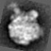

| .OPERATION: | FT | ; Fourier transform image |
| .INPUT FILE: | sav_rib_avg | ; Image (input) |
| .OUTPUT FILE: | ft | ; Image (output) |
| . | ; | |
| .OPERATION: | FT | ; Reverse Fourier transform image |
| .INPUT FILE: | ft | ; Fourier image (input) |
| .OUTPUT FILE: | ft_rev | ; Image (output) |
| INPUT | REVERSE TRANSFORM'd OUTPUT IMAGE |
|---|---|
|  |
| sav_rib_avg | ft_rev |